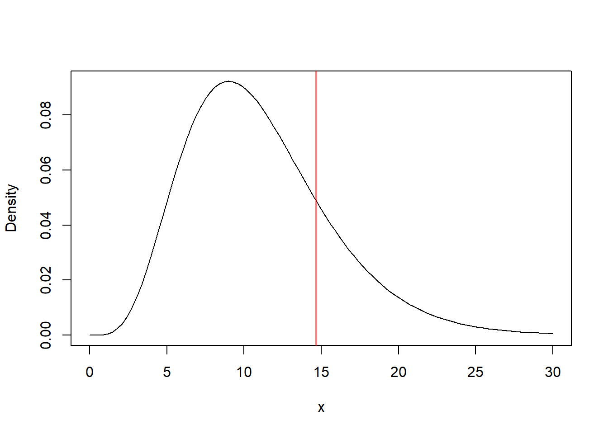
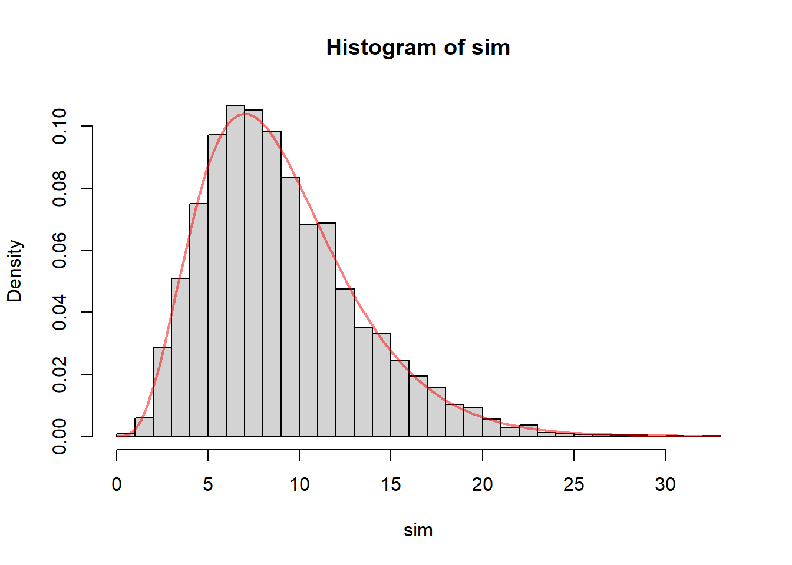
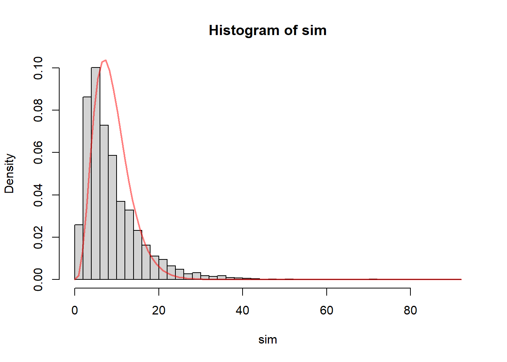

10 Inference About the Variance
10.1 Introduction
10.1.1 Why Variability Matters
In many real-world problems, understanding variability is just as important as understanding the average.
A mean tells us where the center of a distribution is, but it does not tell us how stable or predictable the observations are around that center. Two populations can have the same mean and yet behave very differently in practice:
- one may be very stable, with observations tightly concentrated around the mean
- another may be highly unpredictable, with observations spread widely around the mean
This difference is often crucial in applications. In many settings, consistency matters just as much as average performance, and sometimes even more.
Examples:
- Manufacturing: consistency of product quality
- Medicine: variability in treatment response
- Finance: volatility of returns
In manufacturing, a process may have the correct average output but still be unacceptable if individual products vary too much. In medicine, a treatment may have the desired average effect, but if patient responses vary substantially, the treatment may still be difficult to trust. In finance, an investment may have an attractive average return, but very large variability means greater uncertainty and risk.
In all these cases, the parameter of interest is:
\[ \sigma^2 \]
which measures how spread out the data are.
So, just as the mean describes location, the variance describes spread. Both are population characteristics, and both may be the main focus of statistical inference depending on the scientific question.
10.1.2 Variance versus Mean as Parameters of Interest
Up to this point, inference has focused on the mean \(\mu\).
Now we focus on the variance \(\sigma^2\).
This is a major shift in emphasis. Inference about the mean and inference about the variance are not just parallel versions of the same problem. They behave differently, both mathematically and practically.
Key conceptual differences:
- \(\bar{X}\) behaves approximately normal by the Central Limit Theorem in many situations
- \(S^2\) does not have a normal sampling distribution
- Inference about \(\sigma^2\) depends strongly on distributional assumptions
This makes variance inference:
- more fragile
- more sensitive to skewness and outliers
The reason is intuitive. The sample mean averages the observations, so its behavior tends to stabilize as the sample size grows. By contrast, the sample variance is built from squared deviations, and squaring gives extra weight to extreme values. As a result, unusual observations have a much stronger effect on variance-based procedures than on mean-based procedures.
This is one of the central ideas of this chapter:
Inference about the mean is often fairly robust, but inference about the variance is much more sensitive to departures from the model assumptions.
So throughout this topic, it is especially important to pay attention to the shape of the population distribution and to the presence of outliers.
10.1.3 Motivating Example
Suppose a laboratory measures a chemical concentration multiple times.
Even if the average measurement is correct, large variability means:
- the measurement process is unreliable
- conclusions based on the data may be questionable
This is a common situation in scientific work. A laboratory instrument may be accurate on average but still imprecise if repeated measurements fluctuate too much. In that case, any conclusion based on a single reading or a small set of readings may be unstable.
Thus, we are interested in:
- estimating \(\sigma^2\)
- quantifying uncertainty about \(\sigma^2\)
This connects directly to the type of uncertainty quantification emphasized in applied settings, where both accuracy and precision matter.
Accuracy refers to whether the average is centered at the correct value. Precision refers to how much variability there is around that average. A good measuring process should ideally have both: correct center and small spread.
So in this chapter, the main inferential question is not just “what is the average value?” but rather:
How much variability is present, and how uncertain are we about that variability?
10.2 Inference About One Population Variance
10.2.1 Assumptions
To perform inference about \(\sigma^2\), we assume:
- Observations are independent
- The population has variance \(\sigma^2\)
- The population is normally distributed
This last assumption is critical.
That is one of the most important differences between inference about variance and inference about the mean. For the mean, large-sample methods often remain useful even when the population is not normal. For the variance, the classical methods developed here rely directly on normality.
So when we use chi-square methods for variance, we are not simply making a convenient assumption. We are using a result that is exact only under normality.
This is why checking assumptions is especially important in this chapter.
10.2.2 The Variance Estimator
When the population variance \(\sigma^2\) is unknown, the natural estimator is the sample variance,
\[ S^2 = \frac{1}{n-1}\sum_{i=1}^n (X_i-\bar{X})^2. \]
Definition 10.1 (Variance Estimator) The sample variance \(S^2\) is the standard estimator of the population variance \(\sigma^2\).
This estimator measures how far the observations tend to fall from the sample mean.
The idea is intuitive:
- if the observations are tightly clustered around \(\bar{X}\), then \(S^2\) will be small
- if the observations are widely spread out, then \(S^2\) will be large
So the sample variance provides a numerical summary of the variability in the sample and is used as the sample-based estimate of the population variance.
10.2.2.1 Why the Formula Uses Squared Deviations
The estimator is based on the squared deviations
\[ (X_i-\bar{X})^2. \]
These deviations measure how far each observation is from the sample mean. Squaring them serves two purposes:
- it prevents positive and negative deviations from canceling out
- it gives greater weight to larger deviations
This second feature is important. Observations that lie far from the mean contribute much more to the variance than observations that lie close to the mean. That is why the variance is sensitive to outliers and to skewed populations.
10.2.2.2 Why We Divide by \(n-1\)
A common question is why the denominator is \(n-1\) instead of \(n\).
The reason is that the sample mean \(\bar{X}\) is itself estimated from the data. Once \(\bar{X}\) has been computed, the deviations
\[ X_1-\bar{X},\dots,X_n-\bar{X} \]
cannot vary freely. In fact, they must add up to 0. So only \(n-1\) of them are free to vary.
For this reason, the sample variance is based on \(n-1\) degrees of freedom.
This choice is also important mathematically because it makes \(S^2\) an unbiased estimator of \(\sigma^2\), meaning that
\[ E[S^2] = \sigma^2. \]
So on average, the sample variance hits the correct population variance.
10.2.2.3 Interpretation of the Estimator
The variance estimator \(S^2\) is not itself the population variance. It is only an estimate based on one sample.
If we repeatedly took samples of the same size from the same population, the value of \(S^2\) would vary from sample to sample. Some samples would produce smaller values, some larger values.
This is why we need statistical inference:
- the point estimate \(S^2\) gives our best sample-based guess for \(\sigma^2\)
- but the estimate is subject to sampling variability
- so we also need confidence intervals and hypothesis tests to quantify uncertainty
This is exactly parallel to what happened with inference about the mean. There, \(\bar{X}\) estimated \(\mu\). Here, \(S^2\) estimates \(\sigma^2\).
10.2.2.4 Relation to the Standard Deviation
Because the variance is expressed in squared units, it is sometimes harder to interpret directly.
For that reason, we often also consider the sample standard deviation
\[ S = \sqrt{S^2}. \]
The standard deviation is in the same units as the original data, so it is often easier to describe in words.
Still, the variance estimator \(S^2\) is the fundamental quantity in theory, because the exact sampling distribution under normality is derived for \(S^2\).
10.2.2.5 Why the Variance Estimator Is More Sensitive Than the Mean Estimator
The sample mean is based on a simple average of the observations, while the sample variance is based on squared deviations.
Because of the squaring:
- large observations far from the mean have a strong effect on \(S^2\)
- skewness affects the estimator more strongly
- outliers can greatly inflate the estimate
This is one reason why inference about the variance is more fragile than inference about the mean.
The estimator \(S^2\) is still natural and important, but it should always be interpreted with awareness of how strongly it can react to unusual observations.
10.2.2.6 A Small Numerical Illustration
Suppose we observe the sample
\[ 4,\ 5,\ 6. \]
Then
\[ \bar{X} = \frac{4+5+6}{3} = 5. \]
The squared deviations from the mean are
\[ (4-5)^2 = 1,\qquad (5-5)^2 = 0,\qquad (6-5)^2 = 1. \]
So
\[ S^2 = \frac{1+0+1}{3-1} = \frac{2}{2} = 1. \]
This tells us that the variability of the observations around the sample mean is estimated to be 1 in squared units.
10.2.2.7 Summary
The sample variance
\[ S^2 = \frac{1}{n-1}\sum_{i=1}^n (X_i-\bar{X})^2 \]
is the natural estimator of the population variance \(\sigma^2\).
It is based on squared deviations from the sample mean, uses \(n-1\) degrees of freedom, and provides the foundation for inference about variability.
It plays the same role for \(\sigma^2\) that \(\bar{X}\) plays for \(\mu\):
- \(\bar{X}\) estimates the population mean
- \(S^2\) estimates the population variance
10.2.3 Distribution of the Sample Variance Under Normality
If the data come from a normal distribution:
\[ \frac{(n-1)S^2}{\sigma^2} \sim \chi^2_{n-1}. \]
This is the fundamental result for inference about one population variance.
It tells us that if we scale the sample variance by the true variance, the resulting statistic follows a chi-square distribution with \(n-1\) degrees of freedom.
Important properties:
- The distribution is right-skewed
- It depends on \(n\)
- It is not symmetric, unlike the normal distribution
This explains why inference about variance behaves differently from inference about the mean.
There are several ideas hidden in this result.
First, the statistic involves \(n-1\) rather than \(n\) because one degree of freedom is used in estimating the sample mean \(\bar{X}\). Once the sample mean is computed, only \(n-1\) independent pieces of variation remain for measuring spread.
Second, the chi-square distribution is supported only on positive values. That makes sense because a variance can never be negative.
Third, because the chi-square distribution is skewed, the corresponding confidence intervals and rejection regions for variance will also be asymmetric. This is one of the most visible differences between mean inference and variance inference.
10.2.4 Pivot Quantity for Inference About \(\sigma^2\)
A pivot quantity is a function of the sample data and the unknown parameter whose probability distribution does not depend on the value of the unknown parameter.
Pivot quantities are useful because they allow us to construct confidence intervals and hypothesis tests directly from a known distribution.
For inference about the population variance, the key pivot quantity is
\[ \frac{(n-1)S^2}{\sigma^2}. \]
When the population is normally distributed, this quantity has a chi-square distribution with \(n-1\) degrees of freedom:
\[ \frac{(n-1)S^2}{\sigma^2} \sim \chi^2_{n-1}. \]
This result is fundamental because it transforms the unknown variance \(\sigma^2\) into a statistic whose distribution is known.
The key point is that although the pivot contains the unknown parameter \(\sigma^2\), its distribution does not depend on the value of \(\sigma^2\) itself, as long as the normality assumption holds.
This is what makes it so useful.
Once we have a pivot quantity, we can:
- place probability statements around it
- invert those statements to obtain a confidence interval for \(\sigma^2\)
- compare its observed value to chi-square critical values to perform hypothesis tests
So the pivot quantity is the bridge between the sample variance \(S^2\) and the inferential procedures developed in this chapter.
In summary, the pivot quantity for one-sample variance inference is
\[ \frac{(n-1)S^2}{\sigma^2}, \]
and under normality it provides the foundation for both confidence intervals and tests about the population variance.
10.2.5 Does Knowing the Population Mean Help?
In most practical settings, the population mean \(\mu\) is unknown, so the sample variance is computed using deviations from the sample mean \(\bar{X}\).
However, if the population mean \(\mu\) were known, then we could base the variance estimator on the deviations from \(\mu\) instead of from \(\bar{X}\).
In that case, we would consider
\[ \frac{1}{n}\sum_{i=1}^n (X_i-\mu)^2. \]
This quantity measures spread around the true center of the population rather than around the estimated center.
The advantage is that no degree of freedom is lost in estimating the mean. As a result, under normality,
\[ \frac{\sum_{i=1}^n (X_i-\mu)^2}{\sigma^2} \sim \chi^2_n. \]
Compare this with the usual result when \(\mu\) is unknown:
\[ \frac{(n-1)S^2}{\sigma^2} \sim \chi^2_{n-1}. \]
So knowing \(\mu\) changes the pivot quantity and gives a chi-square distribution with \(n\) degrees of freedom rather than \(n-1\).
This is slightly advantageous because:
- the expression is simpler
- no degree of freedom is used to estimate the center
- inference is slightly more precise
Still, the overall message does not change. Even when \(\mu\) is known, inference about \(\sigma^2\) still relies strongly on the normality assumption.
So knowing the population mean helps somewhat, but it does not remove the fundamental sensitivity of variance inference to the underlying distribution.
10.2.6 Confidence Intervals for \(\sigma^2\)
A \((1-\alpha)\) confidence interval is:
\[ \frac{(n-1)S^2}{\chi^2_{1-\alpha/2}} \leq \sigma^2 \leq \frac{(n-1)S^2}{\chi^2_{\alpha/2}}. \]
This interval is obtained by starting with the chi-square distribution of
\[ \frac{(n-1)S^2}{\sigma^2} \]
and then solving for \(\sigma^2\).
Interpretation:
- The interval is asymmetric
- The asymmetry reflects the skewness of the chi-square distribution
This asymmetry is not a technical detail. It reflects an important reality: uncertainty about a variance is not naturally balanced in the same way that uncertainty about a mean often is.
For example, if the sample variance is moderately large, the range of plausible larger values of \(\sigma^2\) may extend much farther than the range of plausible smaller values. The chi-square distribution captures that asymmetry.
A confidence interval for variance should be interpreted as a range of plausible values for the population spread, assuming the model assumptions hold. If the interval is narrow, then the data provide a relatively precise assessment of variability. If the interval is wide, then there is substantial uncertainty about the true variance.
In some applications, it may be more interpretable to report a confidence interval for the standard deviation \(\sigma\) by taking square roots of the endpoints.
10.2.7 Hypothesis Testing for \(\sigma^2\)
We test:
\[ H_0: \sigma^2 = \sigma_0^2 \]
Test statistic:
\[ \chi^2 = \frac{(n-1)S^2}{\sigma_0^2}. \]
This statistic compares the observed sample variance to the variance claimed in the null hypothesis.
Interpretation:
- if \(S^2\) is close to \(\sigma_0^2\), then the statistic should take a typical value under the chi-square distribution
- if \(S^2\) is much larger than \(\sigma_0^2\), then the statistic will be unusually large
- if \(S^2\) is much smaller than \(\sigma_0^2\), then the statistic will be unusually small
Decision:
- Reject \(H_0\) if the statistic is too large or too small
- Or compute a p-value
The appropriate rejection region depends on the alternative hypothesis:
- right-tailed if we are testing whether the variance is larger than \(\sigma_0^2\)
- left-tailed if we are testing whether it is smaller
- two-tailed if we are testing whether it is simply different
Because the chi-square distribution is not symmetric, the lower-tail and upper-tail cutoffs are not mirror images of each other, unlike what happens with normal-based tests.
10.2.8 Numerical Example
Suppose:
- \(n = 12\)
- \(S^2 = 20\)
- \(\sigma_0^2 = 15\)
# Parameters
n <- 12
s2 <- 20
sigma0 <- 15
# Statistic Computation
chi_stat <- (n-1)*s2/sigma0
# Comparison to the Distribution under the Null Hypothesis
curve(dchisq(x, df = n-1), from = 0, to = 30, ylab = "Density")
abline(v = chi_stat, col = rgb(1, 0, 0, 0.5), lwd = 2)
The value computed here is the observed chi-square test statistic.
Interpretation:
- Larger values → evidence of larger variance
- Smaller values → evidence of smaller variance
But the value itself is not enough. We must compare it to the chi-square distribution with \(n-1=11\) degrees of freedom.
If we are doing a right-tailed test, large values provide evidence that the population variance exceeds 15. If we are doing a two-sided test, both unusually small and unusually large values count as evidence against the null.
So the practical interpretation always depends on the direction of the alternative hypothesis.
10.2.9 Simulation Study
We verify the theoretical distribution using simulation.
# Simulation Settings
set.seed(5428)
B <- 5000
# Distribution Settings
n <- 10
s2 <- 25
sim <- replicate(B, {
# Samples
x <- rnorm(n, sd = sqrt(s2))
# Computes the Pivot Quantity
(n-1)*var(x)/s2
})
hist(sim, probability = TRUE, breaks = 40)
curve(dchisq(x, df = n-1), add = TRUE, col = rgb(1, 0, 0, 0.5), lwd = 2)
This simulation is very useful conceptually.
Each repetition does the following:
- generates a new random sample from a normal population
- computes the sample variance
- standardizes it using the true variance
- stores the resulting value
After many repetitions, the histogram shows the sampling distribution of the statistic
\[ \frac{(n-1)S^2}{\sigma^2}. \]
Interpretation:
- The histogram aligns with the chi-square curve
- Confirms the theoretical result
This helps connect the theory to repeated sampling. The chi-square distribution is not just a formula we memorize. It describes how the statistic behaves across many repeated samples when the assumptions are true.
10.2.10 Simulation Study Non-normality
The chi-square result for the variance pivot quantity,
\[ \frac{(n-1)S^2}{\sigma^2} \sim \chi^2_{n-1}, \]
is exact only when the population is normal.
This simulation shows what happens when that assumption is violated.
Instead of sampling from a normal population, the code generates observations from a skewed distribution. In particular, it starts from a chi-square distribution with df = sk, recenters it to have mean 0, rescales it to have variance 1, and then multiplies by \(\sqrt{\sigma^2}\) so that the population variance is still equal to the target value \(s^2 = 25\).
This is important because it isolates the effect of non-normality. The population variance is still the same as in the normal case, so any discrepancy we observe is due to the lack of normality rather than a change in the true variance.
The simulation then computes the usual pivot quantity
\[ \frac{(n-1)S^2}{\sigma^2} \]
for each of the \(B=5000\) samples and compares its empirical distribution to the chi-square density with \(n-1\) degrees of freedom.
# Simulation Settings
set.seed(5428)
B <- 5000
# Distribution Settings
n <- 10
s2 <- 25
sk <- 3
sim <- replicate(B, {
# Samples
x <- (rchisq(n = n, df = sk) - sk) / (sqrt(2 * sk)) * sqrt(s2)
# Computes the Pivot Quantity
(n-1)*var(x)/s2
})
hist(sim, probability = TRUE, breaks = 40)
curve(dchisq(x, df = n-1), add = TRUE, col = rgb(1, 0, 0, 0.5), lwd = 2)
The histogram represents the empirical sampling distribution of the pivot quantity under a skewed population, while the red curve is the chi-square density that would be correct under normality.
If the normality assumption were not important, then the histogram and the chi-square curve would still align closely. But in general they do not.
The purpose of this plot is to show that when the population is skewed, the classical chi-square approximation may fail. The empirical distribution of the pivot quantity may have:
- a different center
- a different spread
- a different degree of skewness
As a result, procedures based on the chi-square distribution may no longer have their advertised properties.
In particular:
- confidence intervals for \(\sigma^2\) may not have the correct coverage probability
- hypothesis tests for \(\sigma^2\) may not have the correct Type I error rate
This is one of the most important conceptual differences between inference about the mean and inference about the variance. For means, large-sample approximations are often quite robust. For variances, the exact procedure depends much more strongly on normality.
The simulation also illustrates why skewness matters so much. Since the sample variance is based on squared deviations, unusually large observations have a strong effect on the result. In a skewed population, large observations occur more often on one side of the distribution, and this changes the behavior of the variance estimator and of the pivot quantity built from it.
So the main lesson of this simulation is:
Even if the population variance is correctly specified, the usual chi-square pivot quantity may not behave like a chi-square random variable when the population is not normal.
This is why inference about variance should be applied with caution when the data show strong skewness or other substantial departures from normality.
10.2.11 Confidence Interval Simulation
The classical confidence interval for the population variance is derived from the pivot quantity
\[ \frac{(n-1)S^2}{\sigma^2}, \]
which has a chi-square distribution with \(n-1\) degrees of freedom when the population is normal.
That result leads to the confidence interval
\[ \frac{(n-1)S^2}{\chi^2_{1-\alpha/2,n-1}} \leq \sigma^2 \leq \frac{(n-1)S^2}{\chi^2_{\alpha/2,n-1}}. \]
The purpose of this simulation is to check how this interval behaves in repeated sampling.
In particular, we want to study two important characteristics of the interval:
- coverage, meaning how often the interval actually contains the true variance
- average interval length, meaning how wide the interval tends to be on average
A good confidence interval should have coverage close to the nominal confidence level, while also being reasonably short. If the interval is too narrow, it may miss the true value too often. If it is too wide, it may contain the true value often but provide little useful precision.
In this simulation, the true population variance is set to
\[ \sigma^2 = 25, \]
and samples of size
\[ n = 10 \]
are repeatedly generated.
The code uses a chi-square distribution with df = sk = 100, recenters and rescales it, and then multiplies by \(\sqrt{s^2}\). Because the degrees of freedom are large, this distribution is much closer to normal than the skewed example from the previous section. So this simulation is intended to examine the performance of the classical interval in a situation where the population is not exactly normal, but is reasonably close.
For each of the \(B = 5000\) simulated samples, the code does the following:
- generates a sample of size \(n=10\)
- computes the sample variance
- constructs the usual chi-square confidence interval for \(\sigma^2\)
- checks whether the interval contains the true variance
- records the width of the interval
# Simulation Settings
set.seed(5428)
B <- 5000
# Distribution Settings
n <- 10
s2 <- 25
sk <- 100
# Confidence Interval Settings
a <- 0.05
conInt <- replicate(B, {
# Samples
x <- (rchisq(n = n, df = sk) - sk) / (sqrt(2 * sk)) * sqrt(s2)
# Computes the Quantile
xlow <- qchisq(p = 1 - a/2, df = n - 1)
xupp <- qchisq(p = a/2, df = n - 1)
# Computes the Bounds
low <- (n-1) * var(x) / xlow
upp <- (n-1) * var(x) / xupp
# Confidence Interval
c(low, upp)
})
conInt <- t(conInt)
# Checks if the Interval Contains true Variance
cov <- (conInt[, 1] <= s2) & (conInt[, 2] >= s2)
# Reports
print(paste0("Coverage: ", round(mean(cov) * 100, 2), "%"))## [1] "Coverage: 94.8%"## [1] "Average Interval Length: 71.12"The quantity Coverage reports the proportion of simulated intervals that contain the true variance \(s^2 = 25\).
If the classical confidence interval is working well, this proportion should be close to 95%, since we are constructing 95% confidence intervals.
The quantity Average Interval Length reports the average width of the interval across the 5000 repetitions. This gives a sense of the precision of the method. Shorter intervals are more informative, but only if they still maintain the desired coverage.
The main idea behind this simulation is that confidence intervals should not be judged only by their formula. They should also be judged by their repeated-sampling behavior.
In particular:
- if the coverage is close to 95%, then the procedure is performing as intended
- if the coverage is much lower than 95%, then the interval is too optimistic and misses the truth too often
- if the coverage is much higher than 95%, then the interval may be unnecessarily wide
Because the underlying distribution here is close to normal, we would expect the coverage to be reasonably close to the nominal level. That would indicate that the classical chi-square interval is fairly reliable in this setting.
This simulation also helps clarify an important idea about confidence intervals:
A 95% confidence interval does not mean there is a 95% probability that the specific interval from one sample contains the true variance.
Instead, it means that if we repeatedly collect samples and construct intervals in the same way, then about 95% of those intervals should contain the true variance.
That is exactly what this simulation is checking.
So the main lesson of this section is:
The quality of a confidence interval can be evaluated through repeated sampling by studying both its coverage and its average length.
When the normality assumption is approximately satisfied, the classical chi-square interval for \(\sigma^2\) should show coverage close to the nominal level. When the normality assumption fails badly, that coverage can deteriorate, which is why simulation studies like this are useful for understanding how robust the procedure really is.
10.2.12 Inference About the Variance When the Population Is Not Normal
10.2.12.1 Effect of Skewness
If the population is skewed:
- the chi-square approximation may fail
- confidence intervals may not have correct coverage
This is a very important warning. Unlike mean inference, variance inference is not protected by a simple large-sample argument in the same way.
The reason is that variance is built from squared deviations, and squared deviations are especially sensitive to asymmetry and extreme observations. A skewed distribution tends to produce sampling behavior for \(S^2\) that does not match the chi-square model.
As a result, a nominal 95% confidence interval may not actually cover the true variance 95% of the time.
10.2.12.2 Effect of Sample Size
- Small \(n\): strong distortion
- Large \(n\): behavior improves, but still not perfect
Small samples are especially problematic because there is little opportunity for the irregularities of the population shape to average out.
With larger samples, the sample variance becomes more stable, but the classical chi-square-based procedures can still be misleading when the population is strongly skewed or heavy-tailed. This is exactly the kind of sensitivity highlighted in the textbook discussion of inference about population variances.
So the correct summary is:
larger samples help, but they do not make variance inference nearly as robust as mean inference.
10.2.12.3 Practical Guidance
Before applying variance inference:
- check for skewness
- examine outliers
- consider simulation or bootstrap methods
These checks are not optional details. They are central to the reliability of the method.
A boxplot, histogram, or normal probability plot can reveal whether the data are approximately consistent with the normal model. If the sample shows strong asymmetry or extreme outliers, the classical variance procedures should be treated with caution.
In settings where normality is doubtful, simulation-based or bootstrap approaches may provide a more realistic assessment of uncertainty.
10.2.13 Example: Simulating Scenarios with Different Skewness and Sample Size
set.seed(5428)
simulate_var <- function(n) {
x <- rexp(n) # skewed data
var(x)
}
small <- replicate(5000, simulate_var(10))
large <- replicate(5000, simulate_var(50))
par(mfrow=c(1,2))
hist(small, main="n=10")
hist(large, main="n=50")
Here the population is not normal. Instead, it is exponential, which is positively skewed.
So this simulation is not checking the chi-square result. It is deliberately showing what happens when the assumptions fail.
Interpretation:
Small samples → highly variable estimates
Larger samples → more stable behavior
More specifically, the sample variance from the skewed population can fluctuate substantially, especially when \(n\) is small. The sampling distribution is often asymmetric and unstable.
This reinforces the main lesson:
the classical procedures for variance are much more sensitive to population shape than the corresponding procedures for means.
10.3 Comparing Two Population Variances
10.3.1 Why Compare Variability Across Populations?
We often want to compare variability between groups:
- Is one treatment more consistent?
- Is one process more stable?
This type of question arises naturally when we are not just interested in average behavior but in reliability or uniformity.
For example:
- a treatment with smaller variability may produce more predictable patient outcomes
- a manufacturing process with smaller variability may produce more consistent products
- a measurement device with smaller variability may be more precise
So in this setting, the parameter of interest is not a single variance, but rather the relative size of two variances.
10.3.2 Assumptions
- Independent samples
- Both populations are normal
Once again, normality is central.
The classical procedure for comparing two variances is built from the ratio of two sample variances, and its exact distributional result depends on both populations being normal.
10.3.3 Distribution of the Ratio of Sample Variances
If assumptions hold:
\[ \frac{S_1^2}{S_2^2} \sim F_{n_1-1, n_2-1}. \]
More precisely, under the null hypothesis that \(\sigma_1^2=\sigma_2^2\), the ratio of the two sample variances follows an \(F\) distribution with \(n_1-1\) and \(n_2-1\) degrees of freedom.
This result comes from the fact that each sample variance, after proper scaling, follows a chi-square distribution. The ratio of two independent scaled chi-square variables produces the \(F\) distribution.
So the \(F\) distribution plays, for two variances, the role that the chi-square distribution plays for one variance.
10.3.4 Review of the \(F\) Distribution
- Ratio of two scaled chi-square variables
- Right-skewed
- Depends on two degrees of freedom
The fact that it is right-skewed is very important.
If the two population variances are equal, then the ratio \(S_1^2/S_2^2\) should typically be near 1, but it will not be symmetrically distributed around 1. Large ratios are possible, and the distribution stretches further to the right than to the left.
This again means that inference about variances behaves differently from the more symmetric setting of inference about means.
10.3.5 Confidence Intervals for \(\sigma_1^2/\sigma_2^2\)
\[ \left( \frac{S_1^2}{S_2^2} \cdot \frac{1}{F_{1-\alpha/2}}, \quad \frac{S_1^2}{S_2^2} \cdot \frac{1}{F_{\alpha/2}} \right) \]
This interval gives a range of plausible values for the ratio
\[ \frac{\sigma_1^2}{\sigma_2^2}. \]
Interpretation is especially simple when we focus on whether 1 is contained in the interval:
- if 1 is in the interval, equal variances remain plausible
- if the interval is entirely above 1, population 1 appears more variable
- if the interval is entirely below 1, population 2 appears more variable
Because this is a ratio, the interpretation is multiplicative. For example, a ratio near 2 suggests that one population may have about twice the variance of the other.
10.3.6 Hypothesis Testing for \(\sigma_1^2/\sigma_2^2\)
Test:
\[ H_0: \sigma_1^2 = \sigma_2^2 \]
Statistic:
\[ F = \frac{S_1^2}{S_2^2}. \]
Under the null hypothesis, if the populations are normal and the samples are independent, this statistic follows an \(F\) distribution.
The logic is intuitive:
- if the population variances are equal, the sample variances should usually be of similar size
- if the ratio is unusually large or unusually small, then equality of variances becomes doubtful
Because the \(F\) distribution is asymmetric, two-sided testing requires some care. It is not enough to think in terms of symmetric tails around 1.
10.3.7 Numerical Example
## [1] 0.2087293This code computes the observed ratio of sample variances.
If the ratio is close to 1, the samples do not suggest a large difference in variability. If it is far from 1, the data suggest unequal variability.
However, the raw ratio should be interpreted through the \(F\) distribution, not by intuition alone. Sampling variation can produce ratios somewhat above or below 1 even when the population variances are equal.
So, as always, the inferential question is not simply “is the ratio equal to 1?” but rather:
is the observed ratio unusually far from 1, relative to what the \(F\) distribution predicts under equal population variances?
10.3.8 Simulation Study
simF <- replicate(5000, {
x <- rnorm(10)
y <- rnorm(10)
var(x)/var(y)
})
hist(simF, probability=TRUE)
curve(df(x, 9, 9), add=TRUE, col=2)
This simulation shows the repeated-sampling distribution of the ratio of sample variances under normality.
Interpretation:
- the histogram represents the empirical distribution of the variance ratio
- the overlaid curve is the theoretical \(F\) distribution
- good agreement supports the theoretical result under the model assumptions
This is the two-sample analogue of the earlier chi-square simulation for one variance.
10.3.9 Comparing Two Variances When the Populations Are Not Normal
10.3.9.1 Effect of Skewness
- F-test becomes unreliable
- Type I error may be incorrect
This is one of the main practical limitations of the classical \(F\) test.
If the populations are skewed or heavy-tailed, the ratio of sample variances may no longer behave like an \(F\) random variable. This means that the nominal significance level of the test may not be what we think it is.
For example, a test designed to have Type I error 0.05 may reject too often or too rarely.
10.3.9.2 Effect of Sample Size
- Larger samples help
- But sensitivity remains
As with one-sample variance inference, increasing the sample size improves stability, but it does not fully solve the robustness problem.
The \(F\) test remains substantially more sensitive to non-normality than many classical procedures for means.
10.3.9.3 Practical Guidance
- Avoid F-test with skewed data
- Use alternative or simulation-based methods
If the data are clearly non-normal, then graphical diagnostics should come first. In some settings, a transformation, bootstrap procedure, or another alternative may be more appropriate than the classical \(F\) test.
The important lesson is not that the \(F\) test is useless, but that it should be used only when its assumptions are at least reasonably plausible.
10.3.10 Example: Simulating Scenarios with Different Skewness and Sample Size
set.seed(5428)
sim_skew <- replicate(5000, {
x <- rexp(20)
y <- rexp(20)
var(x)/var(y)
})
hist(sim_skew)
This example replaces normal samples with exponential samples, which are skewed.
So here the ratio of sample variances is being studied under a violation of the normality assumption.
Interpretation:
- the resulting distribution may look quite different from the theoretical \(F\) distribution
- this demonstrates how strongly the classical method depends on normality
This is an important warning for practice: even if the formulas are easy to apply, they may be unreliable if the data do not support the assumptions.
10.4 Comparing More Than Two Variances
10.4.1 Motivation
We may want to compare variability across multiple groups.
For example:
- Are several production processes equally stable?
- Do multiple treatments have the same variability?
- Are several laboratories equally precise?
This is the natural extension of comparing two variances.
10.4.2 A Classical Test for Equality of Several Variances
Bartlett’s test is commonly used.
Bartlett’s test is a classical method for assessing whether several populations have the same variance.
The test is based on the sample variances from all groups and combines them into a single test statistic.
10.4.3 Strong Dependence on Normality
- Very sensitive to non-normality
- Can give misleading results
This point is especially important for Bartlett’s test.
Because it is designed under a normality model, departures from normality can strongly affect its behavior. In practice, this means the test may appear to detect differences in variances when the real issue is simply skewness or heavy tails.
So Bartlett’s test should be used cautiously unless the assumption of normality is fairly believable.
10.4.4 Brief Practical Discussion
In practice:
- graphical diagnostics are important
- robust alternatives are often preferred
A side-by-side boxplot or histogram of the groups can often provide valuable initial information about differences in spread and about possible non-normality.
At an introductory level, the main takeaway is that multi-group variance comparisons exist, but they inherit the same fragility that appears throughout variance inference.
10.5 Summary and Key Formulas
10.5.1 One Variance
\[ \frac{(n-1)S^2}{\sigma^2} \sim \chi^2 \]
This is the key result for exact inference about one population variance under normality. It leads to:
- confidence intervals for \(\sigma^2\)
- hypothesis tests for \(\sigma^2\)
10.5.2 Two Variances
\[ \frac{S_1^2}{S_2^2} \sim F \]
under the appropriate normality and independence assumptions when the population variances are equal.
This is the key result for comparing two variances. It leads to:
- confidence intervals for \(\sigma_1^2/\sigma_2^2\)
- tests for equality of variances
10.5.3 Key Insights
- Variance inference is less robust than mean inference
- Strong dependence on normality
- Always check assumptions before applying formulas
More specifically:
- the sample variance is highly sensitive to skewness and outliers
- chi-square procedures for one variance are exact only under normality
- \(F\) procedures for comparing two variances are also highly sensitive to non-normality
- larger samples help, but they do not make variance inference nearly as robust as mean inference
So the central message of this chapter is:
Classical inference about variance is mathematically elegant and exact under normality, but it must be used with care in practice.